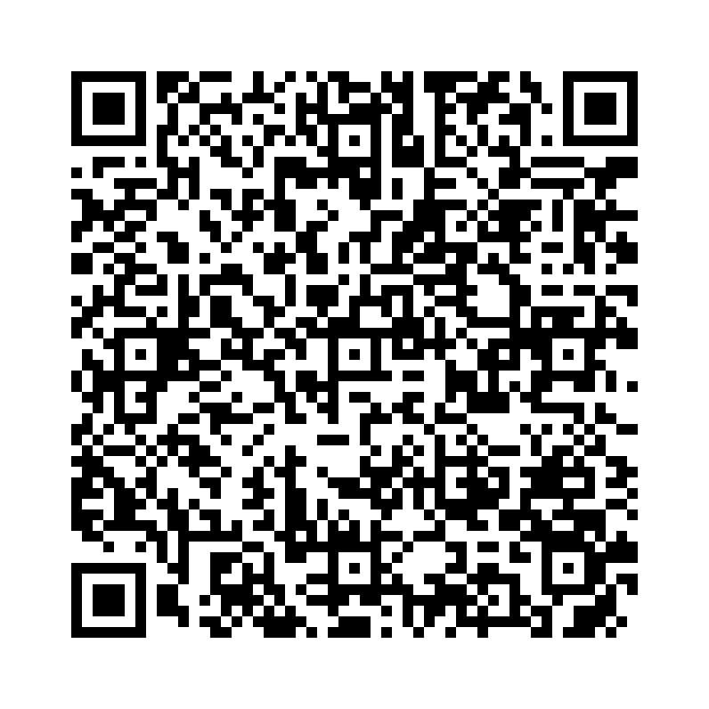

「think」は「心の中で考える」「意見や判断を持つ」といった意味を持つ動詞です。話し手の意見や印象、考え、計画などを表すときに使います。
以下の単語を正しい語順に並べ替えて、正しい英文を作りましょう。

問題 1： (it / will / I / think / rain / today) - 今日は雨が降ると思います。
解答： I think it will rain today.
解説： 「I think it will rain today.」は「今日は雨が降ると思います。」という意味です。
問題 2： (she / book / thinks / the / is / interesting) - 彼女はその本が面白いと思っています。
解答： She thinks the book is interesting.
解説： 「She thinks the book is interesting.」は「彼女はその本が面白いと思っています。」という意味です。
問題 3： (you / think / do / this / is / answer / correct / ?) - この答えは正しいと思いますか？
解答： Do you think this answer is correct?
解説： 「Do you think this answer is correct?」は「この答えは正しいと思いますか？」という意味です。
問題 4： (thinking / about / he / is / his / homework) - 彼は宿題について考えています。
解答： He is thinking about his homework.
解説： 「He is thinking about his homework.」は「彼は宿題について考えています。」という意味です。
問題 5： (about / do / you / think / what / this / movie / ?) - この映画についてどう思いますか？
解答： What do you think about this movie?
解説： 「What do you think about this movie?」は「この映画についてどう思いますか？」という意味です。
問題 6： (think / I / I / need / more / time) - 私はもっと時間が必要だと思います。
解答： I think I need more time.
解説： 「I think I need more time.」は「私はもっと時間が必要だと思います。」という意味です。
問題 7： ( the / game / they / think / is / fun) - 彼らはそのゲームが楽しいと思っています。
解答： They think the game is fun.
解説： 「They think the game is fun.」は「彼らはそのゲームが楽しいと思っています。」という意味です。
問題 8： (you / think / before / speak) - 話す前に考えてください。
解答： Think before you speak.
解説： 「Think before you speak.」は「話す前に考えてください。」という意味です。
問題 9： (she / of / making / is / thinking / a / cake) - 彼女はケーキを作ろうと考えています。
解答： She is thinking of making a cake.
解説： 「She is thinking of making a cake.」は「彼女はケーキを作ろうと考えています。」という意味です。
問題 10： (think / you / I / are / a / good / friend) - あなたは良い友だと思います。
解答： I think you are a good friend.
解説： 「I think you are a good friend.」は「あなたは良い友だと思います。」という意味です。